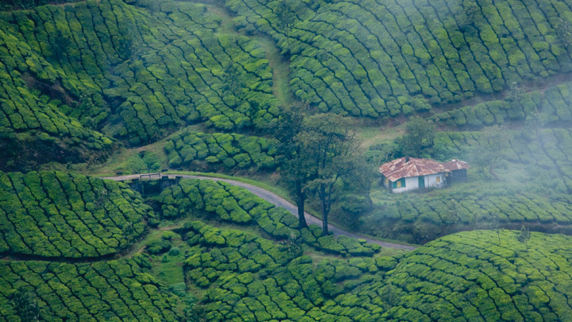
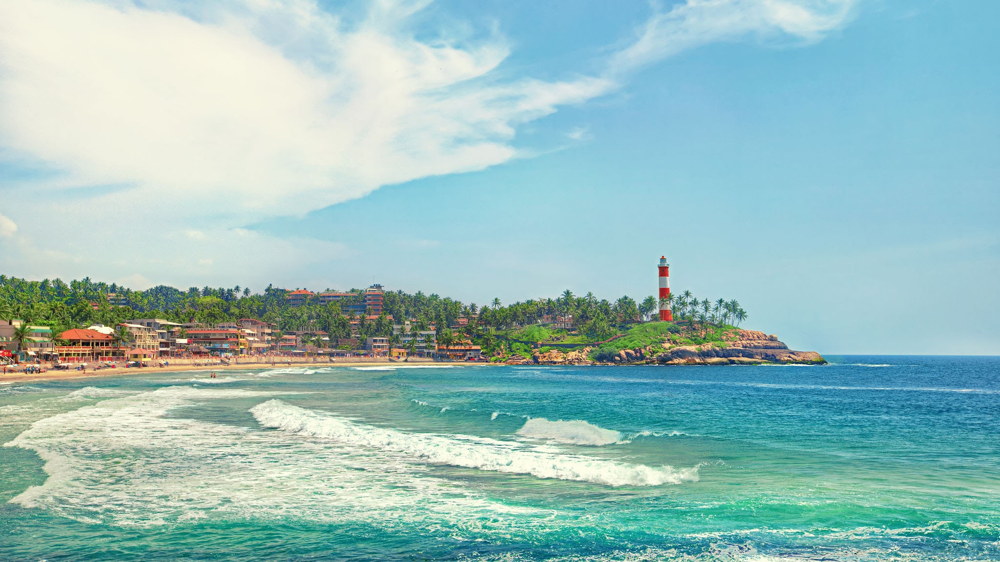
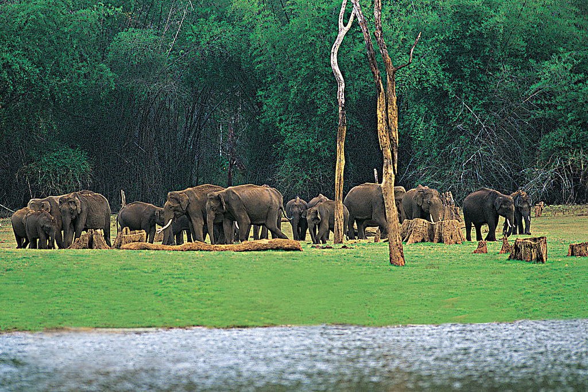

After all there is a reason why Kerala is called God's own country
Kerala is the Southernmost state of India & is the spice hotspot of the world since ancient times.'Land of coconuts',which is a nickname for the state used by locals due to the abundance of coconut trees. Kerala is also known as God's Own Country", and is one of the popular tourist destinations in India.Kerala is famous especially for its ecotourism initiatives and beautiful backwaters. Its unique culture and traditions, coupled with its varied demography, Kerala is a popular destination for both domestic as well as foreign tourists. Kerala is well known for its beaches, backwaters in Alappuzha and Kollam, mountain ranges and wildlife sanctuaries.
Kerala is a perfect mix of rich history and contemporary metropolis served on the platter of enchanting natural beauty. In addition to the rich natural environment, Kathakali will make you dance while the famous Ayurvedic spa will awaken your senses.Kerala cuisine includes a wide variety of vegetarian and non-vegetarian dishes prepared using fish, poultry, and meat. Culinary spices have been cultivated in Kerala for millennia and they are characteristic of its cuisine.Rice is a dominant staple that is eaten at all times of day.
Some Famous Tourist Places
Kumarakom
Munnar
Wayanad
Kochi
kozhikode
Thrissur
Alleppey
Kannur
Kovalam
Thekkady
Thiruvananthapuram
Bekal
Varkala
Muthanga Wildlife Sanctuary
Idukki
Vagamon
Munnar

Meet me at the tea fields
Munnar rises as three mountain streams merge, 1,600 m above sea level, this hill station was once the summer resort of the erstwhile British Government in South India. One of the most sought after honeymoon destinations in Kerala, Munnar is replete with resorts and logding facilities that fit a wide rage of budgets. Sprawling tea plantations, picturesque towns, winding lanes and holiday facilities make this a popular resort town. Among the exotic flora found in the forests and grasslands here is the Neelakurinji. This flower which bathes the hills in blue once in every twelve years, will bloom next in 2030.
Kovalam

Kovalam a perfect beach for sun bath
Kovalam is an internationally renowned beach with three adjacent crescent beaches. A massive rocky promontory on the beach has created a beautiful bay of calm waters ideal for sea bathing.he leisure options at this beach are plenty and diverse. Sunbathing, swimming, herbal body toning massages, special cultural programmes and catamaran cruising are some of them. The tropical sun acts so fast that one can see the faint blush of coppery tan on the skin in a matter of minutes. Life on the beach begins late in the day and carries on well into the night. The beach complex includes a string of budget cottages, Ayurvedic health resorts, convention facilities, shopping zones, swimming pools, Yoga and Ayurvedic massage centres.
Alleppey
It is a perfect day to sail on a houseboat in the backwaters of Kerala
Alleppey is one of the most famous tourist destinations in Kerala.The tranquil backwater cruises are a once in a lifetime experience. Alappuzha, known as the 'Venice of the East', is especially popular for its houseboat cruises where you can soak in nature at its finest form.The scenic backwaters of Kerala comprise serene stretches of lakes, canals and lagoons located parallel to the coast of the Arabian Sea. Spending a holiday in the picturesque Alleppey ponds on a houseboat will be a divine experience. With its winding canals, its sparkling golden sandy beaches, and its inviting sunset view, everything in this place will surely surprise you.
Thekkady

Elephants in Thekkady Wildlife Sanctuary, Idukki
Bengal tiger shelters the Periyar wildlife sanctuary in the greens of Thekkady. You can enjoy many tourist activities in this small town. You can enjoy the boat ride, jungle trekking, nature walks, bamboo trekking, and rafting. These places to visit in Kerala is blessed with very pleasing natural beauty. Pandikuzhi, Panchalimedu, Chellarkovil, Vandiperiyar, and Abrahams Spice Garden are not to be missed to fully enjoy the beauty of Thekkady. The sanctuary is famous for its dense evergreen, semi-evergreen, moist deciduous forests and savanna grass lands. It is home to herds of elephants, sambar, tigers, gaur, lion-tailed macaques and Nilgiri langurs. Due to the density of the forest, sightings of elephants and especially tigers are highly unlikely